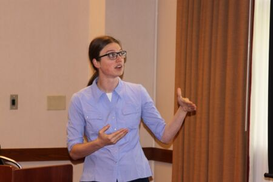

Postdoctoral Researcher,
Originally from Nebraska, I went to the state of Washington for my undergraduate education and then moved on to Virginia for graduate school. I have a passion for learning about the way the universe and everything in it operates and sharing what I have learned with others.
Rebekah Pestes, PhD
Postdoctoral Researcher,
Institut de Physique du Globe de Paris (IPGP)
Originally from Nebraska, I went to the state of Washington for my undergraduate education and then moved on to Virginia for graduate school. I have a passion for learning about the way the universe and everything in it operates and sharing what I have learned with others.

Contact Information
Laboratoire AstroParticule et Cosmologie (APC),
Paris, France
Education
Ph.D. Physics, Virginia Tech, May 2021B.S. Biophysics and Mathematics, Walla Walla University, June 2015
Research Experience
Postdoctoral Researcher, Laboratoire AstroParticule et Cosmologie, Institut de Physique du Globe de Paris, 2022 - PresentPostdoctoral Associate, with Dr. Patrick Huber, Physics Dept, Virginia Tech, 2021 - 2022
DOE Office of Science Graduate Student Research Program, with Dr. Peter Denton, Brookhaven National Laboratory, 2020
Graduate Research Assistant, with Dr. Patrick Huber, Physics Dept., Virginia Tech, 2015 - 2019 & 2021
Research Assistant, with Dr. Roy Campbell, Physics Dept., Walla Walla University, 2010 - 2015
Teaching Experience
Math and Physics Learning Coach, NovaStar Prep Tutoring, 2022Graduate Teaching Assistant, Physics Dept., Virginia Tech, 2016 - 2019
Math Tutor, Teaching Learning Center, Walla Walla University, 2012 - 2015
Wastewater Treatment Lab Assistant, Engineering Dept., Walla Walla University, 2012-2013
Teacher's Assistant, Physics Dept., Walla Walla University, 2011 - 2015
Private Tutoring in Math and Science, 2010 - 2021
Professional Service
Member of Local Organizing Committee for Multi-Messenger Tomography of Earth Workshop, 2023Co-organized Astro-particle and Neutrino Theory Journal Club at Virginia Tech, 2022
Panelist for Physics REU Graduate Student Q&A at Virginia Tech, 2019
Panelist for Professional Development Seminar Series' Graduate Student Panel at Virginia Tech, 2019
Room technician for the 20th International Workshop on Neutrinos from Accelerators at Virginia Tech, 2018
Panelist and helped plan/organize the Conference for Undergraduate Women in Physics at Virginia Tech, 2017
Professional Memberships
Sigma Pi Sigma, 2017 - PresentLadies of Robeson (Club for Women in Physics at Virginia Tech), 2015 - 2022
American Physical Society, 2013 - 2022